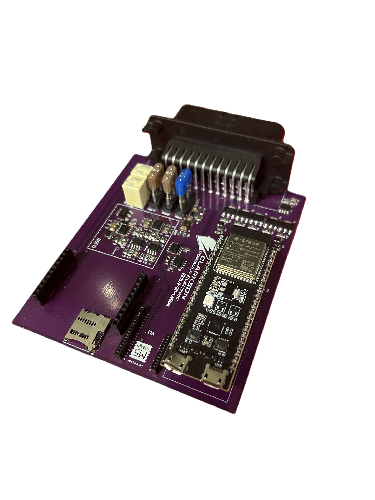
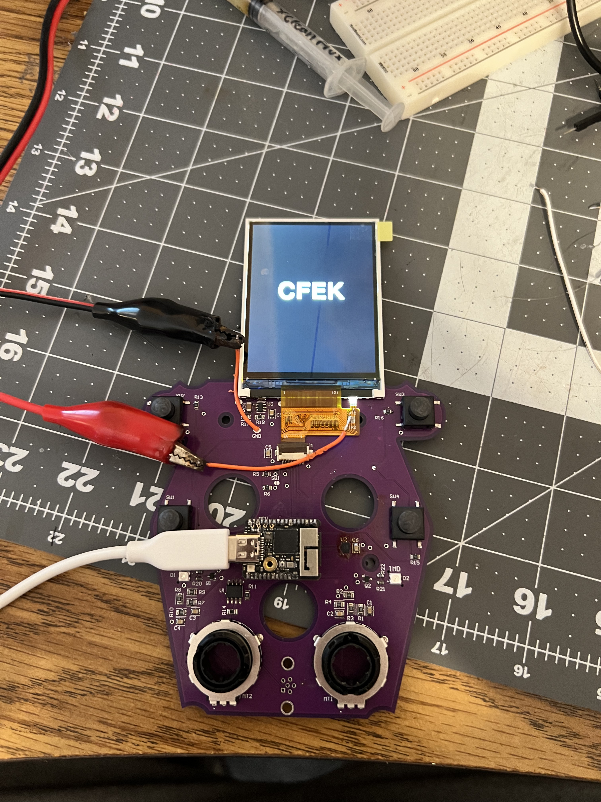
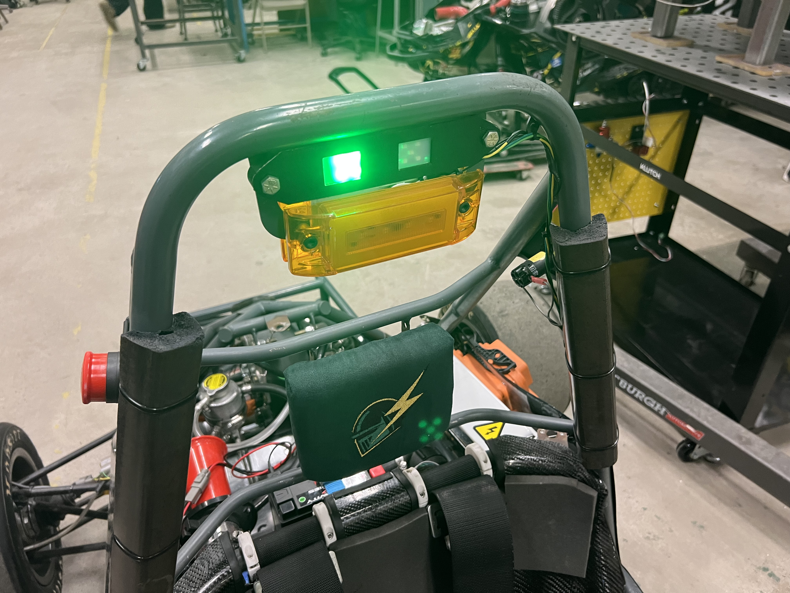

LV · 02
LV · 02
Every PCB on the car, the harness that connects them, and the bus they talk over.
The Low Voltage subteam designs and manufactures every PCB on the car — the ECU, the dash, the pedalbox, and more. The wiring harness that ties those boards to the rest of the vehicle is built from scratch, and the CAN bus communications running across it are set up and tuned by the team as well.
The ECU is the arbitrator of whether the car drives. It is the board that makes the final call on whether the car is allowed to move, and like every other board on the car, it is designed and built in house.

The dash is what the driver actually reads while the car is running — the board's whole job is to put the information the driver needs in front of them. It goes through the same path as the rest of the team's electronics: designed in house, brought up on the bench, then mounted in the car.

The pedalbox board reads the driver's pedal positions and handles datalogging — and datalogging is the area getting the biggest push on the 2026 car.
The wiring harness is made from scratch rather than bought as an assembly. On top of it, the team sets up the CAN bus communications between all of the boards and components in the car, so the ECU, the dash, the pedalbox, and everything else share one network instead of a pile of point-to-point wiring.
Two status lights sit on the roll hoop, where anyone standing near the car can read them: the TSSI and the ready-to-move light. The TSSI is made in house.

On the new car, Low Voltage is taking datalogging to the extreme. Linear potentiometers are going on the suspension, g-force measurement is being added, and a good deal more beyond that — the goal being that far more of what the car does on track comes back as data the team can actually go review afterward.